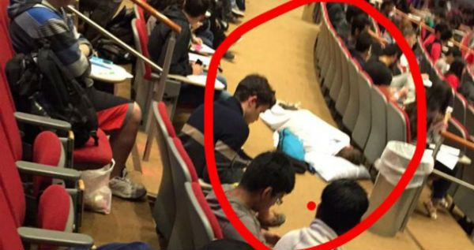

OK so this goes out to all the professors that have such boring classes and are so in their own world when lecturing, that some students come in with their pillow and blanket and camp out! While it's hilarious, it's also an indicator for the current state of higher eduation. Below are some quick pointers for all you professors out there...
If you liked this page, vote here: